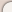
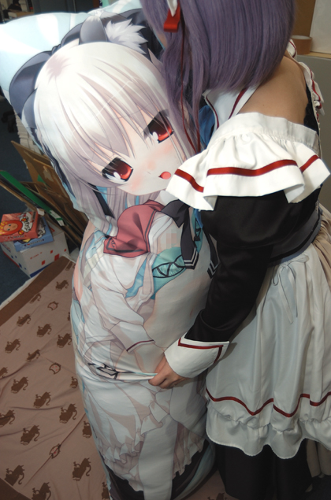
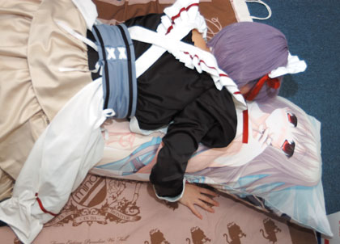
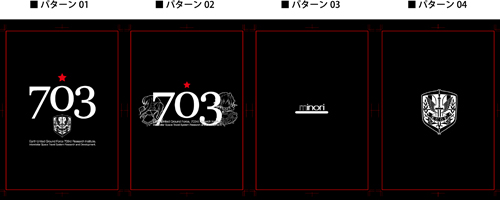

|
|
| |
|
 |
Last Updated 2009.12.22 |
|
|
“有明漫画まつり”は出ないけど、[eden*][ef]、のグッズとか結構作ってみましたよ！ |
|
|
|
|
|
|
|
|
|
|  |
|
|
|
| ■ 紳士のたしなみ [ 秋葉原電気外祭り その2 ] 出展情報ページです！ |
|
|
|
「あらあら、シオン。顔が赤いですけどどうしたの？」
「ちょ、ちょっとエリカってばぁ……」
気が付けばもう12月……終盤！ 『eden*』が無事に発売できたなあ、と思っていたら、もう年末です。皆様いかがお過ごしでしょうか。
とか言ってる余裕はありません！ 告知開始がイベント2日前！ さっさといきます！
ということで、夏に引き続き今回も、[ 秋葉原電気外祭り ]にお邪魔させていただきます！ 宴がはじまるよ！
 ● オフィシャルのページはこちら ● オフィシャルのページはこちら
そんな訳で“イベント直前だからって、あまり急いでる感じが全く見受けられない。僕にはわかる”と思った、他の人と自分は違うと自覚がある紳士淑女にお送りする、minoriの [ 秋葉原電気外祭り 2 ] 出展情報ページです。謹んで新春をことほぐよ！
この期に及んでいろいろ決まっていないので、何か詳細が決定する度に、随時更新して参りますので是非ゼヒたまにはご覧くださいませ！ ヒーヒヒーッ！
ちなみに、各お知らせ内容は下記の感じとなっておりますー
-----
■ 出展全体のお知らせ等は [ こちら ]からどうぞ～ UPDATED
■ イベント等のお知らせは [ こちら ]で。 UPDATED
■ グッズ・物販関連のお知らせは [ こちら ]にござりますー UPDATED
■ ご参加に関する諸注意については [ こちら ]にござりますー UPDATED
-----
■ 購入メモ作りました！
事前に購入検討をしようと思っていらっしゃる方に朗報です！
いちいち商品リストを作るのが面倒！ そんな時用に購入メモを用意しました！
予め検討される方、お友達と分担される方、当日慌てたく無い方などなど、ぜひご活用ください。
（「購入メモ」と当日お配りする「注文票」は別のものです。これはあくまで検討用のものです）
pdf形式ですので、ダウンロードの上、打ち出してご利用下さい。
→ minoriブース購入メモはこちらから
■ 携帯電話から当日の在庫状況がチェックできるかも？
そして、今回も携帯電話から在庫状況をチェックできるページを用意しました（通信料は皆様のご負担となります）。当日うまくいけば在庫状況が更新されます。相変わらずβテストですのであまり期待しないでください。
http://www.minori.ph/dg2list.html
です。
|
|
|
|
|
|
|
|
|
|
|
|
|
| ■ 出展関連のお知らせです。 [ 2009/12/19 更新 ] UPDATED |
|
|
|
■ 出展概要
>> イベント名｜秋葉原電気外祭り 2
>>会場｜東京・秋葉原
>> 開催日時｜minoriは以下の日程で参加します。
- 2009年12月27日（日）：10:00～18:00頃
- 2009年12月28日（月）：10：00～18：00頃
- 2009年12月29日（火）：10：00～18：00頃
>> minoriブースの場所｜アニメイト秋葉原店様・UDXビル側・1F 特設スペース

minoriがお邪魔しているのは、いわゆるアニメイトさんの正面玄関・中央通り側入り口ではなく、その裏側・UDX側入り口付近となります。普段は上記ふたつの入り口は繋がっているのですが、イベント期間中は区切ってあって、行き来できない可能性があります。ご注意くださいませ。（なお、物販の待機列も、minoriに関してはUDX側入り口から形成します。
今回は、メイン会場＋秋葉原のショップ様で開催される予定だったりします。協賛イベントとか、その他モロモロは オフィシャルサイト さんから是非チェックしてみてください！
●公式ビジュアルブックレット発売中♪
開催記念公式ビジュアルブックレットが各店で発売になっています！
イベント期間中に「Lyceeのスペシャルカード」が貰える引換券付きです。
お風呂ポスターのオマケがもらえるショップさんもあるので、よろしくお願いしますー（minoriのはアニメイト秋葉原店様でもらえるようですよ！）

よろしくお願いいたしますー。
2009/12/26
|
|
|
|
|
|
|
|
|
|
|
|
|
| ■ イベントのお知らせ。 [ 2009/12/26 更新 ] UPDATED |
|
|
|
●イベントについて
イベント初日の27日15:30頃より、メイン会場・ベルサール秋葉原の特設ステージにて、『eden*』ウェブラジオ「終末のエデン」の公開録音を予定しております！
詳細は「音泉。」さんのwebサイトに告知がある通りです（投げっぱなし！）
出演はパーソナリティのお二人に加え、ゲストに志村由美さん（シオン役）と後藤麻衣さん（塔野真夜役）が登場です！
ステージは表からも見える場所ですので、特に入場制限や整理券などの予定は今の所ありません。一応、ベルサール会場の敷地内であればどこからでも見えたり聞こえたりします。
ただし、周囲では物販もやっていますので、そちらの邪魔をしないようにお願いいたします。
現場を整理するスタッフが状況により判断をすることがありますので、そちらに従うよう、よろしくお願いいたします。
安全で楽しいイベントにしましょう！
また、下にも記述してございますが、本イベントは個人、企業を問わず事前に弊社が取材許諾を行った媒体並びに弊社が認めた記録行為以外、一切の録音・撮影を禁止させて頂きます。違反行為が発覚した場合はイベントを中止することもございます。ご了承ください。ルールを守ってお楽しみ下さい。
|
|
|
|
|
|
|
|
|
|
|
|
|
| ■ グッズ関連のお知らせですー♪ [ 2009/12/21 更新 ] UPDATED |
|
|
|
寒い。なんて寒いんだ。汗は沢山出るし、涙まで出てきたよ……。と、ぽっちゃりさんの冬を実践する今日この頃。なんだかんだ言っても、やっぱりえっちなグッズを作りたい衝動にかられたminoriでは、『ef - a fairy tale of the two.』、『eden* PLUS+MOSAIC』のグッズを性懲りも無く作っています。
ということで、今回もどの位人が来るのか分からないので、生産数もちょっと目分量（多いのは多いですが）だったりしますが、気になったグッズ等ありましたら、是非ゼヒお立ち寄りくださいませ♪
------------
■ [ eden* ] サウンドトラック“Asterisk”BOX
そんな訳で、ご要望が多かった『eden*』のサウンドトラックCDを作りました。他に説明のしようがないですが、天門・柳 英一郎・minori音楽のいつものメンバーによる同作全BGM、メインテーマ「little explorer」を収録した、2枚組み。「Alato」とかと同様の、豪華上製本仕様パッケージとなっております。あと付属するブックレットには、例によって天門・柳・酒井のいい加減な座談会も収録。よかったらこれも読んでみてね♪
で、このCDは2010年初頭に、一般販売も予定しているのですが、今回は先行販売特別仕様（価格も）ということで、下記のおまけつき。
- ・三方背の収納スリーブケース（薄いダンボールっぽい）
- ・eden* 背景を印刷した紙3枚（ちょっといい紙なので、飾ったりできるかも）
- ・ジャケットイラストの下敷き（定番ですね）
ということで、定番の音楽もの。よろしければチェックしてくださいませ♪
予価｜4,000円
購入限定数｜10（待機列がある場合）
------------
■ [ eden* ] シオンちょっとえっちな抱き枕カバー
『eden*』より、シオンの抱き枕カバーです。本体には、通販版ゆうこ抱き枕カバーで使用した、謎の素材“たつるテック”を使用。
●つかいかたの一例

「シオンちゃんかわええのぅ」
「いやっ、そんなとこっ、さわらないでよぅ」
↓

「ちゅぷちゅぷ、ここがええのんかぁ」
「はぁはぁ……おっぱいなめられると、なんかムズムズするよぉ」
（妄想中のエリカは150cmちょい）
そして、もう当たり前かもしれませんが、恒例の「0721ボイスCD」付属です。『eden* PLUS+MOSAIC』の続きを、ご自宅で、通勤中の電車内で、お楽しみいただけます。起きてて見る夢もあるとも！
ということで、行楽のお供に。そりの代わりとして。帰省のお供に。そしてすりつけのおと（以下略
● だ～れだ！（モデルのシオンは150cmちょい）
予価｜8,000円
購入限定数｜5（待機列がある場合）
------------
■ [ ef ] 千尋ちょっとえっちな布団カバー
恒例のちょっとえっちな大物シリーズ。最近寒いので、布団カバーを作ってみました。
千尋といえば駅、そして屋外FU○K、とお考えの変態紳士の皆様もいらっしゃるかと思い、その2つを組み合わせた感じです。
仕様としては、1500mm x 2100mmくらいの一般的なサイズです。勿論シングルサイズ。片側は、上のいやらしイラストですが、「ママが来た！」等の際に便利かもしれない、裏側プリントも下の画像の感じにご用意。
歓迎されない訪問者への対応も万全です。
そして、これももはや当然ご期待の事と思いますが、こちらも「0721ボイスCD」をしっかりお付けしております。夜に昼に、千尋布団の中を照らす為の懐中電灯とヘッドホンを持ち込んで、ちょっとした閉塞空間を作っていやらしい気分を盛り上げつつ楽しむ、なんて事も可能ですね。（ちなみに、上の画像は千尋をトリミングしてありますが、もっとスネの方までのイラストとなっております。また、千尋の体が、丁度人間と同じ程度になるよう印刷してありますので、布団の内側で見ると結構臨場感あるかもしれません）
● こんな感じの、人間的サイズ（モデルのシオンは150cmちょい）
ということで、多くを語る事はないかもしれませんね。寒い冬を、ちょっとした酸欠と血流UP効果で暖める一品。どうぞよろしくお願いします。
※ 何だかマズい気持ちになったのでモザイク画像入れてみました。実際はジャマモノなしのイラストとなっておるます。
予価｜9,000円
購入限定数｜5（待機列がある場合）
------------
■ [ eden* ] ラヴィちょっとえっちなマイクロファイバータオル
『eden*』より、ラヴィのマイクロファイバータオルです。恒例のグッズですね。
当初は、よく欧米の戦闘機に描いてあるような“ミサイルに馬乗りになったような美女イラスト”に近づけようと思って作り始めたこのタオル。でもラヴィなら刀すりつけだろう、という意見がありましたので、そっち方面です。ちなみに、羽織ってる制服は亮のです。とか書いてしまうのもアレでしたでしょうか。
あと、いつものマイクロファイバータオルシリーズでは、背景のモチーフが丸とか星とかカワイイものですが、今回は手裏剣イメージにしてみました。くのいち派のあなたも、細かい事言わずにチェックしてみて頂ければ幸いです。（なお下の、すみれさんver.ではモチーフはハート）
ということで、温泉旅行のお供に。帽子女子マニアのご友人への御土産に。ご自宅の床の間に。そしてすりつけのおと（以下略
※ 何だかマズい気持ちになったのでモザイク入れてみました。実際はジャマモノなしのイラストです。また、画像ではトリミングしてふともも辺りまでの表示となっておりますが、実際はひざ立ちみたいな姿勢で、帽子の先から足元まであるイラストです。
予価｜2,500円
購入限定数｜5（待機列がある場合）
------------
■ [ ef ] すみれさんいくつになっても女の子マイクロファイバータオル
恒例のマイクロファイバータオルに、なんと、『ef』より、すみれさんがまさかの登場です！ 姉さん事件です！
ずっと、企画としては上がっていたのですが「年増は誰も買わないだろ」「お母さんと一緒」「要するにライバルはバウムクーヘン並みのモノってことなの？」等の議論が渦巻いてなかなか実現できなかったすみれさんグッズ。ですが、最終的には「一番おっぱが大きいから、必要だろう」というツルの一声で、ついに形になりました。全国のお姉さん的女性ファンの皆様、お待たせいたしましたね。
「私もまだまだ千尋ちゃんには負けな……」という女の子マインドから、密かに制服を着ようとしたら……誰！？。という一場面でしょうか。フランス風に言うなら“自己主張の強いふたつの果実は、それを押さえ込もうとする繊維の戒めを、難なくバーストさせた”といった風情で、ボタンもはじけ飛んでいます。
ということで、minori内の年増エロチカの最高峰。久々に合う家族へのちょっとしたジャブとして、帰省のお供に。数少ないと思われる、メガネ緑髪キャラマニアのお友だちへの御土産に。これからご結婚されるあの方へのプレゼントに。そしてすりつけのおと（以下略）是非どうぞ♪
※ 何だかマズい気持ちになったのでモザイク入れてみました。実際はジャマモノなしのイラストです。また、画像ではトリミングしておしりまでとなっておりますが、実際はカットひざ下くらいまでのイラストです。
予価｜2,500円
購入限定数｜5（待機列がある場合）
------------
■ [ minori衣類 ] 冬なのでパーカーとかです
毎回毎回執拗に作っている衣類シリーズ。今回は冬なのでパーカーメインです。今回はシンプルなかぶり（プルオーバー）パーカーをご用意しました。あと片方の柄だけ、Tシャツも少しあります。
●[ 第703研究所 ] 柄

[ eden*] より、前半の主な舞台となる“統一軍 第703研究所”モチーフのパーカーです。シンプルで着易いと思います。
フロント胸部（ポケットの上）に「パターン01」(約15cm x 15cmに収まる大きさ)、背中・腰部分に「パターン02」(約15cm x 15cmに収まる大きさ)、背中・首の裏辺りに「パターン03」（フードで隠れるくらいのところ）、フードおでこ部分に「パターン04」（フードをかぶっていない時に、上が天になる方向です）が、それぞれプリントしてあります。ちなみに、赤い枠とトンボはプリントされていません。
サイズはS/M/L/XL/2XLで展開予定(ボディはいろいろなメーカーの、良さそうなサイズを混ぜてあります)。全てかぶるタイプの“プルオーバー・パーカー”です。ボディカラーはブラックのみで、プリントは全ての柄でとも「DIC461（暗い紫色：上のサンプルの白の部分）/DIC157（赤：上のサンプルの赤の部分）」です。
シンプルですが道行く際、分かる人にはわかりそうです。よろしければ是非♪
予価｜4,500円
購入限定数｜5（待機列がある場合）
::::::::::::::
●[ OTD (of the dead) ] 柄
[ eden*] より、パーカーとTシャツです。プレイした方にはちょっと思い当たるフシがあるかもしれないですが、目玉焼きで釣られて手が出てきています。何とか遠まわしに説明したいなあと思ったんですが、難しいのでやめます。
「パターンA」が、パーカーの背中部分(約35cm x 45cm)、「パターンB」はパーカーのフロント胸部・ポケット上で、「パターンC」はフード部分（フードを被らない時に、下に目玉焼き方向）にプリントされる予定です。80年代ゾンビホラーが大好きな方向けのイラストですが、欲しいという人がいらっしゃるのか分かりません。が、自分がほしいので作ってみました。“Death is just the Beginning（死は始まりにすぎない）”の文字で、ハーバート・ウェストっぽさを。目玉焼きの目玉部分の赤が、“破滅の星”を、それぞれ演出しているかもしれません。そんな一品です。
こちらもオーソドックスな被り（プルオーバー）パーカーです。S/M/L/XL/2XL/3XLで展開予定ですが、ゆったりめ・ヘビーウェイトのボディーを探したら、今はあまりないんですね。で、あまりに困ったのであちこちのメーカーのボディを、サイズ毎に混ぜ、“表示は4XLだけど、3XL扱い”という感じで、ご注文時「2XL」以上のボディには、ご注文のサイズより大きいものを用いている場合がございます。要するに、「3XLが欲しい」という方に、「4XL」という表示のパーカーをお渡しする、という感じとなりますので、渡し間違いではありません。予めご了承くださいマセ。（ご注文より小さいサイズ表記のボディをお渡しした場合には、それはミスの可能性が大きいです。お声掛け下さい！）
ちなみに本体カラーはブラックのみで、画像にあるような「茶色っぽいベージュ / 赤」のプリントとなります。
※フード部分のたまごプリントは、フードの構造上（厚いので）、プリント版がちょっとズレたり、荒々しいことが結構多くあるハズです。そこは仕様ですので、ご理解いただければ幸いですー。まあ、衣類のプリントずれなんて“味”のうちかもですけどね。ヒヒー！
で、Tシャツは上のような感じです。サイズはいつものS/M/L/XL/2XL/3XLで展開予定(GILDAN社製6.1oz/17番糸ボディ)。何か「ゴワゴワしたショボい生地に変わっちゃった」というご感想を頂いたのですが、今時の国内生産柔らか生地より、素材が硬質で好きなのでこちらにしています。ボディはGILDANのが断然高いんですけど……主張の強い“Tシャツっぽさ”がある気がするので敢えて)。全て半袖。冬だって、ダウンの下は半そででしょう？ うひひ。ボディカラーはブラックのみで、プリント色はパーカーと同じです。
いつも適当に僕らが着る用に作っているものなので、まあ気が向いたりしたら見てったってくださいな。
予価｜パーカー：4,500円
Tシャツ：2,500円
購入限定数｜各種とも5（待機列がある場合）
------------
■ 「minori13ヶ月卓上カレンダー」2010年版
恒例の「minori13ヶ月卓上カレンダー」2010年版です。今回のテーマは“月の目標”編とさせていただきました。
先日、通販受付もさせていただきましたが、まだの方は、よろしければどうぞ？
予価｜500円
購入限定数｜10（待機列がある場合）
注：カレンダー単体でお求めの場合は購入合計金額が1,000円に満たないため紙袋はつきません。
------------
■ minori普通のリュック
以前作ったメッセンジャーバッグは、職人の尾崎さんのとても手の込んだ細工がとてもご好評いただきました。ありがとうございます。
で、今回は少し一般的というか、最近やたらにTheN●rthFaceとかのスウェード底リュックを背負ってる人が目に付くので、敢えてそういった感じの普通のリュックサックを作ってみました。
これは尾崎さんの手によるものではなく、とある工場でつくりました。何といいますか、特別ラインの尾崎さんモノとは別の、定番モノのラインという位置づけです。とは言え、そんなに悪いものでもなく、ド定番の「Outdo●rProducts」と同型です。てか、無理を言ってその工場で作っていただきました。ナイショですが。
でもロゴワッペン無しです。というか、ほら、いろいろあるんですよ。大人の事情ってやつが！ ハハハこやつめハハハ
上の画像みたいな総柄プリント生地のみで出来ています（ショルダーひも部分、背中にあたる部分等は黒）。実際は、上記パターン見本画像とは色味が異なり、本体は黒・柄がこげ茶・ピンク色の部分はピンクです。
あと、生地はちょっと防水っぽくしたかったので、PVCコーティングのものを使用しています。
● カップそば等を入れて、いざというときの緊急袋に
● 熊本産アベックラーメン等を入れて、夢の無人島セットに
まあ、とりあえず「皆が背負ってるTheN●rthFaceのリュックなんか絶対イヤ」というアナタにもお薦めできるかもしれません。
よろしければドウゾー。
予価｜6,000円
購入限定数｜5（そんなに買う人がいると思えませんが、一応待機列がある場合はこれで）
------------
■ あいまいなスケール付きグラス

恒例の食器シリーズ・グラスです。
今回は、ちょっと細めのグラスに50ml位ずつ目印を印字。250mlまで、おおよそ見当を付けられるメモリ付きっぽくしてみました。まあ、キッチリは測るのは無理ですけど、ちょっと便利かもしれないですね。
画像で水色に表示されている部分は「銀色」、薄いグレイで表示されている部分は「すりガラス」的な仕上げになっている予定です。綺麗に出たらいいんですが。ということで、よろしければどうぞー。
予価｜1,000円
購入限定数｜3（待機列がある場合）
------------
■ ゆのみ2010
恒例の食器シリーズ・寿司ゆのみです。でこぼこしている、お寿司やさんで出てきそうなタイプです。地は白です。
カレンダー1月の飲酒エリカと、9月のサンマみやこ＋景の、2つの飲食柄を、ぐるりとつけました。
定番と言えば定番ですが、よろしければどうぞー。
予価｜1,000円
購入限定数｜3（待機列がある場合）
------------
■ ミニシオンどんぶり
恒例の食器シリーズ・ミニどんぶりです。地はつるつるの白です。
カレンダー10月のシオンが結構気に入ったので、内側の底に。お汁粉とかを入れると、飲み終わった後にアズキで茶色い感じになったシオンに会えます。
右側のガムテープみたいのは、裏底です。ちなみに、上のグラスとゆのみも、底にこの柄が色違いで入ってます。また、内側と外側の側面に、パーカー「703」柄にある、統一軍マークと703の文字もあります。
よろしければどうぞー。
予価｜1,000円
購入限定数｜3（待機列がある場合）
------------
■ ジョッキ of the dead柄
恒例の食器シリーズ・ジョッキです。地はつるつるの白です。いつものより少しポップな形状です。
上にある、パーカー「OTD」の柄をあしらいました。
取っ手の反対側に、画像左の「ロゴ＋手」を、取っ手の内側辺りに、画像中央の目玉焼きを配置。斜め上からみると、飲み物に少し漬かった目玉焼きを取ろうとしているように見えるといいなあ、と思っております。画像右側の“Death is just the Beginning”は裏底です。
パーカー同様、欲しい方がいらっしゃるかよく分かりませんが、ゾンビ映画・ラブクラフトファンの皆様、よろしければどうぞー。
予価｜1,500円
購入限定数｜3（待機列がある場合）
------------
ということで、大体こんな所でしょうか。あとは抱き枕、リュックをはじめ、実物のサンプル写真をアップしたり、詳細等を随時更新したい予定です。皆様お忙しいとは思いますが、是非チェックよろしくお願いします！
|
|
|
|
|
|
|
|
|
|
|
|
|
| ■ ご参加に関する諸注意。 [ 2009/12/22 更新 ] UPDATED!! |
|
|
|
本項記載の事項は、参加前に必ずお読みいただき、ご理解いただきたい内容となります。よろしくお願いいたします。
●はじめに
今回も秋葉原という一般の方もいらっしゃる街中での開催となります。特に周囲の迷惑にならないようお願いいたします。
周囲には住居もあります。高揚する気持ちを抑えてご参加いただければと思います。
特に騒音にはご注意ください。意外と声が大きくなりがちです。警察への通報がなされた場合、開催する側だけでなく、皆さんも責任を負う可能性があります。
慌てたり、走ったり、奇声を発したりしないように。落ち着いて行動してください。
我々もできる限りの努力をしますので、至らぬ点もございますが何卒よろしくお願いします。
●ご来場に際して
第2回目の開催となり参加メーカーも増えました。恐らく早朝からご来場頂く方もいらっしゃると思いますが徹夜で街中を徘徊することはお控えください（ルール違反です。また、東京都条例によって深夜帯の青少年の外出は避ける旨、通達されています。よって少なくとも深夜帯には列形成について告知は行われません）。
開催前に待機列を作成する場所や作成開始時間もそれぞれのメーカーによって異なる可能性があります。それぞれのメーカーの指示に従うようにしてください。
一人のルール違反によって皆が迷惑を被るのがこういったイベントです。くれぐれもご注意ください。
●是非お持ちいただきたいもの
- 筆記用具
注文票を記入したり、何かのメモをとったりと絶対に役立つ一品です。まさにイベントでは必須アイテムです。黒の細めの油性ペンが一番便利だと思います。
- クリップボードやクリアフォルダ
メモを書く場合下にひいたり、紙なんかを折り曲がらないようにして持ち歩ける便利アイテムです。
- 雨具
弊社の方で用意できません。天気予報に十分注意の上必要に応じてお持ち下さい。傘や合羽はもちろん、大きめのビニール袋を用意すると買ったものが濡れたりしないので便利です。
- 500円玉・5000円札
500円単位で販売されるものもあります。できるだけ小銭をご用意ください。5000円札もあると非常に便利です。
- 防寒具
東京とはいえ、冬場は意外と寒いです。特に足元から冷えてきますのでご注意下さい。また日の出前、日没後は特に昼間と比べて温度が下がりますので十分ご注意ください。
- 軽食
今回は街中ですのでコンビニで購入することもできそうですが、最低限の準備はお願いします。栄養補給は重要です。
近隣ではUDXの1Fに24h営業のスーパーマーケット(ワイズマート）があります。コンビニは山手線のガードを越え、ヨドバシカメラ方面に向かうと昭和通りに向かって左側、富士ソフトビルにファミリーマート(7:00～23:00)が、その先の角にセブンイレブン(24h)があります。
●全体的な販売方法について
朝からお並び頂いた順に販売いたします。
すべての商品は初日開場時から販売を開始し、在庫終了をもって完売といたします。初日、２日目、３日目の分売は基本的にいたしません（一度完売になった商品は基本的に追加されないという意味です。但し、以下のような場合が考えられますのでご一読ください）。
商品は在庫のある限り逐次倉庫からブースへ補充をしていきますが、倉庫とブースとの間に距離があり、一時的に売り切れになってしまう可能性があります。その場合一時販売を見合わせる等の処置を行いますので、スタッフの指示に従うようにしてください。
また、交換用予備商品在庫をそれぞれの日に残しますが、在庫として残す必要が無くなった時点で、その翌日の開始時に在庫として充当し販売します。例えば、初日に完売したもののうち、密封されていないものの交換は当日のみでお願いしていますので、初日に交換用として残しておいた予備在庫は２日目の開始時から販売するということです。但し交換商品に対する交換商品（初日完売物に対する交換用予備商品を２日目に販売したような場合の３日目といった状態）はごく少量となりますので販売しないこともあります。詳細は開催日当日の朝までにこのページで告知しますので、そちらをご参照ください。
商品のお取り置き、お預かりはいたしません。ご購入されたものはその場でお持ち帰りになるようお願いいたします。
すべての商品について未開封の状態で直接手で触れることのできる外袋や外箱は梱包材です。梱包材は商品の価格には含まれません（例えばシュリンクされている箱であれば、シュリンクされているビニール部分は梱包材で、箱と中身が商品です。シュリンクされていない箱と中身の場合は、箱が梱包材で中身が商品ということになります）。梱包材は商品が破損したり汚れたりしないよう用いる消費資材ですので、梱包材自体には傷がつくこともございます。こちらを理由に不良品とすることは基本的にできません。
minoriでは1,000円以上の対面販売によるご購入一回につき紙袋を１袋、無料で差し上げております。（１袋で入りきらない場合は複数にさせていただく事もございます。また予め専用の梱包材が用意されております商品につきましては紙袋が付属いたしません）一度のお買い物で複数の袋をご所望頂いてもお渡しすることはできません（お一人でご購入され、ご友人、お知り合いとお分け頂く場合も例外はありません）。また、お一人の方が複数回に渡って購入される場合も、一つの袋におまとめすることをお願いしております（会計を連続または至近時間において２回以上に分けて行い、２袋以上をご所望になるケースがございますが、このような事例はご遠慮下さいという意味です）。紙袋は包装材ですので商品の価格には含まれません。よって、袋としての機能を果たさない破損や汚れ（例えば持ち手が初めから壊れているとか、内部が著しく汚れており商品を汚す可能性がある等）以外による交換はいたしません。また、単体の販売もありません。
ご購入頂いた商品が正しいかどうか、破損していないかどうかといったことは、購入された当日お帰りになる前に必ずお確かめください（翌日以降、開封しなければわからない商品の破損や製造上のミス以外の対処はいたしかねます。また、密封（シュリンクされた）商品も2010年1月13日までに開封して必ずお確かめください。それ以降の交換は基本的にお請けいたしかねます）。購入ミスに関するお問い合わせは特にお友達に購入依頼をされる方に多いようです。商品の詳細が解らない方に依頼する場合は、商品名と数量をわかり易くまとめて必ず双方で確認してからお並び頂くようお願いいたします。
新商品が完売した場合、2日目以降、会社の倉庫を漁って何か持って行くこともあります。その場合、本ページで告知いたします。
-------
ご購入希望の方が増えますと、購入までお待ちいただくことになります。これにより購入待機列が発生します。以下は待機列が発生した場合についてです。すべて必ずお読みください。
-------
○待機列について
購入希望者が多数になった場合待機列が発生します。待機列の形成位置は当日の状況によって変化します。スタッフの誘導に従ってお並びいただくようお願いいたします。
ブース配置の都合上、列にお並びの方を10～20人のブロックに分け、道路を横切って移動して頂くことがあります（いわゆるパケット移動とかピストンと呼ばれるものです）。スタッフの指示に従って移動してください。また、スタッフ側でも注意いたしますが、この移動中に列へ割り込みをされる方がいらっしゃることもあります。前後の方をよく確認の上、前の方から離れて遅れてしまわないように移動してください。
開催時間中にすべての待機列を消化するために時間内でも列形成を終了することがございます。あらかじめご了承ください。
待機中の列に対し、販売する商品のカタログをお回しいたします。ご覧の上、ご不明な点などがございましたら、会計窓口、商品窓口ではなく列を整理するスタッフにお声がけの上ご質問ください。
○待機列に並ぶ時に気をつけて頂きたいこと
寒さ対策を十分してください。東京とはいえ、流石に真冬は意外と寒いです。特に朝晩は冷え込みます。体調は十分整えた上でご参加ください。また、体調が悪くなった場合は無理をせず、付近の建物内などに避難して休んだり、それでも回復しない場合は周囲の方やスタッフに救助を求めてください。
周囲にトイレがありません（最寄のトイレはUDXの中になりますが、常に使えるとは限りません。公衆トイレは駅の東側広場にあります。）。お一人で並ばれる場合は、十分に準備をしてください。トイレにどうしてもいかなけばならないような場合は、周囲に声をかけて、自分の位置をよく確認してから行くようにしてください（お一人の時はもちろん、多人数でお並びの場合もトイレであることをアピールした方が何かとスムーズです）。特にお一人でお並びの場合、黙って列を抜けてしまうと対処のしようがありません。
待機列付近は禁煙です。秋葉原は千代田区にありますので、路上喫煙禁止条例により違反者として摘発された場合、過料2,000円が課せられます。十分にお気をつけください。
待機列は動きます。周囲をよく見て、列が動く前に準備するようにしてください。特にお荷物の多い方は列が動き出してから準備をすると列の移動に間に合わず周囲に迷惑がかかります。また、移動後はできるだけ間隔を詰めてお並びください。各企業が使えるエリアはさほど広くありません。譲り合って利用しなければなりませんので皆さんもご協力ください。
カートの全長は意外と長いです。荷物が多くなる方はカートを引かれることもあると思います。カートは自分の後ろで引っ張るものですから思わぬ事故を誘発することがあります。また、角を曲がるような場合、内輪差によって物を引っ掛けたりして、惨事を招くこともありますので周囲に十分お気をつけください。
音楽を聴いたり、携帯ゲームをしたりして待ち時間を過ごされる方はスタッフからの声が聞こえる程度の音量に留めるようにお願いします。売切情報や列の移動情報など、様々な情報を逐次お伝えしています。スタッフが呼びかける場合、多くは重要なお知らせをしています。音楽やゲームはいいものですが、熱中されるのもほどほどに、こちらにも耳を傾けて頂くようご協力よろしくお願いします。また、音漏れについても周囲へご配慮いただければと思います。
列にお並びの間にお友達とやり取りをすることも多々あることと思います。その場合も列を崩さないようにお願いします。特に列の移動に伴い周囲の迷惑となることがある点、ご留意頂ければと思います。
携帯電話など無線機器でお話する場合は、周囲へご配慮ください。思った以上に大きな声になりがちです。
○待機列がある場合の購入制限数について
待機列が形成されている場合、各商品に購入制限数を設けます。
制限数に関しましては、各商品の解説項に記述してあります。また、当日持参いたします商品カタログや注文票にも記載しますのでそちらでもご確認ください。
購入制限数は待機列が存在する場合のみ有効です。待機列解消後はすべての商品に関して制限無く購入可能となります。
購入制限数は状況により変更することがあります。変更する場合、スタッフが待機列に対して告知します。ご了承下さい。
○待機列がある場合の販売手順について
会計の窓口と商品をお渡しする窓口が別になり、次のフローで販売を行います（当日お配りする注文票にも同じく手順を書いてきますのでご一読下さい）。
1.列の最後尾で注意事項の書かれた注文表をスタッフから受け取る。
↓
2.注文票の注意事項を読む。
↓
3.待機中にまわってくる商品カタログを確認する
（会計窓口、商品窓口に現品見本はありません）
↓
4.注文票に買う商品の個数を記入する
（大きくはっきりと、相手に伝わるように書いてください）
（商品を１つしかお買い求めにならない場合も注文票の記入は必須です）
↓
5.待機中に計算係が巡回してきますので、注文票のチェックを受ける
↓
6.会計窓口（待機列の先頭と対面になります）で会計を済ませる
（この会計後は、購入商品の追加や取りやめはできません）
↓
7.会計担当から購入票を受け取る
↓
8.商品窓口の担当に購入票を渡す
↓
9.商品と購入票を受け取る
↓
10.帰宅前に商品を確認する
（必ず帰宅前に確認してください。密封されていない商品に関する交換等は当日のみ受け付けますので、当日以外は、基本的に開封しなければわからない商品の破損や製造上のミス以外の対処はいたしかねます。また、密封（シュリンクされた）商品も2010年1月13日までに開封して必ずお確かめください。それ以降の交換は基本的にお受けいたしかねます。）
※6～9番は一連の流れです。会計だけ済ませて商品を受け取らず列からはずれることはできません。列（ブース）から離れた場合、minoriでは一切の保証はできかねます。ご了承ください。
待機列解消後は通常の対面販売となります（注文票は不要です）。
-------
●商品に破損等の不具合があった場合
開封（シュリンクされていない）された状態で販売する商品については、基本的に購入された日のみ交換いたします。不具合のある商品をお持ちの上ブースまでお越しください。交換または返金という形で対応させていただきます。
密封（シュリンクされている）された状態で販売する商品ついても、できる限りイベント開催中にブースまでお越しください。どうしてもお越し頂けなかった場合は、2010年1月13日までにminoriまで電子メール（あて先は>>info@minori.phです）にてご連絡ください。追ってminoriから対応をご連絡いたします。
●取り扱い商品の通信販売について
すべての商品に関しまして現状未定です。イベントにおける販売の状況に応じて通信販売を行う可能性もありますが、行わないこともございます。通販行う場合は（イベント開催中も）逐次ブースやWebサイトで告知いたします。
●販売時の対応について
特に混雑時においては全てのスタッフが販売に注力するため商品の販売に関するご質問以外をお受けすることが多くの場合できません。また、スタッフ個人に対するご要望等も同様にお引き受けできません。特に開催時間は有限ですので、十分な回答ができないことが多く心苦しいこともあります。何かご意見、ご要望等がございましたら、電子メールにてお問い合わせください（あて先は>>info@minori.phです。弊社からの回答は基本的に会期終了後となります。）。また、メールをお送りいただく際は5W1Hに従って状況を説明する文章を記述頂けないと根本的な解決ができないことが多々ございます。できるだけ詳しくわかり易く記述頂けると幸いです。誠に申し訳ありませんが、何卒ご協力の程、よろしくお願いいたします。
●社内情報について
ソフトウェアの開発状況など、当日いろいろお問い合わせ頂きますが、現在雑誌媒体やWebサイト等で公になっている事項以外は全てお答えできません。(我々も企業ですので、一応守秘義務や契約といったものが存在します）申し訳ございませんが、ご了承ください。
●撮影・取材について
混雑時の対応はできません。
企業による取材（出版社・Web媒体等）は掲載に際して、事前にご連絡ください。
個人の方が自己責任の範囲で開設しているWebサイト、blog等にて弊社が開催するイベントの内容やブースを撮影したものを不特定第三者に対し公開する場合は、事後で結構ですので掲載したURLをメールにてご連絡いただけると嬉しく思います（あて先は>>info@minori.phです）。但し個人が特定できる写真を掲載する場合は、事前にご連絡ください。
例外としてイベントを行う場合、個人、企業を問わず事前に弊社が取材許諾を行った媒体並びに弊社が認めた記録行為以外、一切の録音・撮影を禁止させて頂きます。違反行為が発覚した場合はイベントを中止することもございます。ご了承ください。
コスプレイヤーさん等、人物を撮影・掲載する場合は、企業・個人を問わず必ず本人の承諾を得てください。また、ブース混雑時や会期終了後の撮影はご遠慮ください。
●おわりに
私共スタッフも様々な点について注意を払っておりますが、行き届かない点も数々あると思われます。皆様のご協力何卒よろしくお願いします。
|
|
|
|
|
|
|
|
|
|
|
|
for dear traveler : This
web site is written in Japanese, almost. Sorry.
本サイトのコンテンツは、基本的に日本語をある程度理解できる方向けに構成されています。 |
|
|
このページは、18歳未満の方にはご覧いただけないコンテンツを含んでいる可能性があります
| 18歳未満の方の閲覧を禁止します |
|
|
|
|
|
|
|